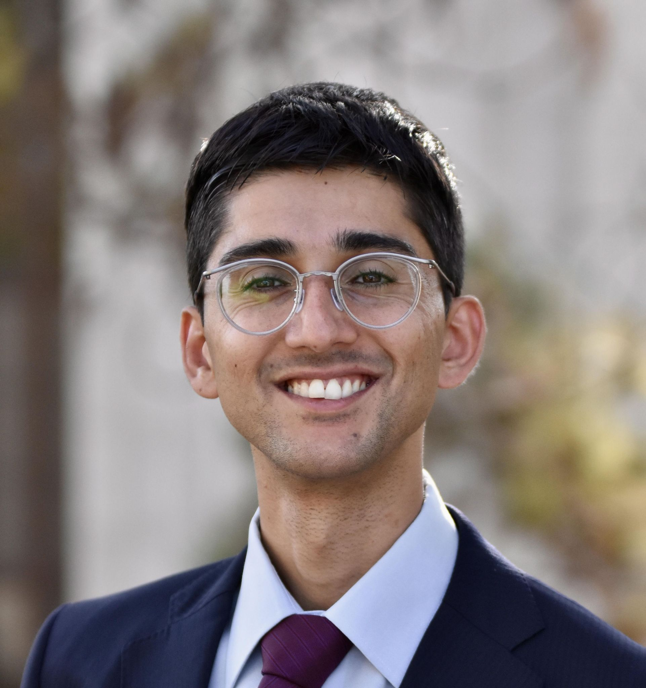
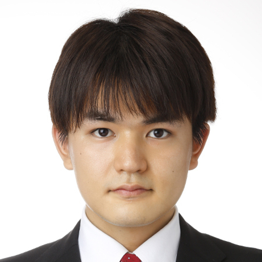
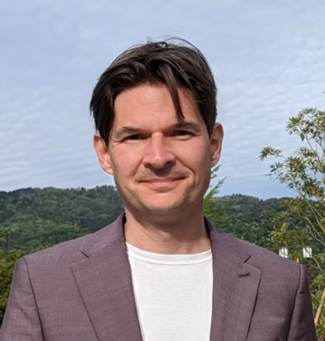
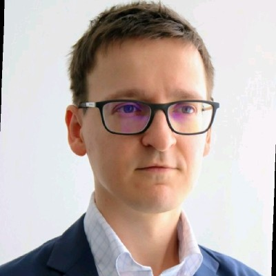
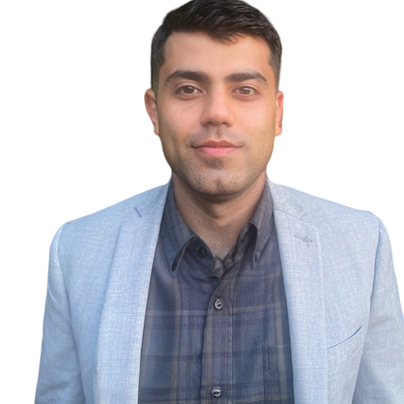
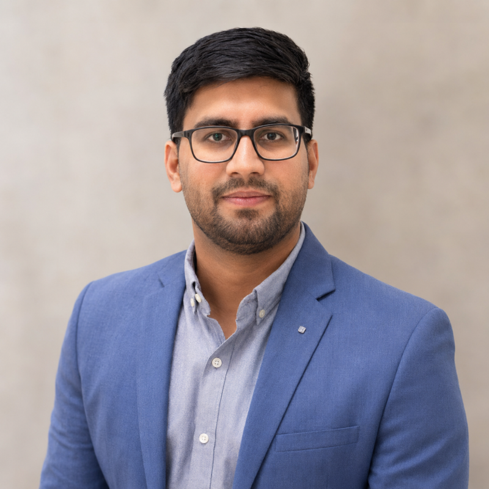

Meet the Teamチーム紹介
A blend of visionary technologists, accomplished entrepreneurs, and cross-cultural leaders with deep roots in the global AI ecosystem.グローバルなAIエコシステムに深く根ざした、先見性ある技術者、実績ある起業家、そして異文化をつなぐリーダーたちのチームです。

Amil KhanzadaAmil Khanzada（創業者）
A Computer Science graduate from UC Berkeley with a background in the Berkeley/Stanford MBA/AI program.UCバークレーでコンピュータサイエンスを専攻、UCバークレー／スタンフォード大学MBA・AIプログラムの経歴を持つ。
Amil has over a decade of experience building and scaling software ventures, including a medical AI startup with 250 staff across 8 countries.8か国で250名を擁する規模の医療AIスタートアップを含め、10年以上にわたりソフトウェア事業の立ち上げと拡大を経験。
His deep connections in Silicon Valley, Japan, and the Gulf, along with his role as a startup advisor at KAUST, bridge the worlds of technology, business, and international policy.シリコンバレー、日本、湾岸地域との強力なネットワークを持ち、KAUST（サウジアラビアの大学）でスタートアップアドバイザーも務め、テクノロジー・ビジネス・国際政策を橋渡しする役割を担う。

Soki FukudaSoki Fukuda（日本戦略アドバイザー）
Founder of Organic AI Inc. and an alumnus of the University of Tokyo's Matsuo Institute, where he conducted joint research.株式会社Organic AI創業者。東京大学の松尾研究所出身で共同研究を行った経歴を持つ。
Currently pursuing a professional degree in Public Policy at the University of Tokyo, he is at the forefront of Japan's new wave of AI entrepreneurship.現在は東大で公共政策専門職学位を取得中、日本の新しいAI起業の波を牽引。
His company primarily provides generative AI services, giving him a direct and current link to Japan's startup ecosystem.自社では主に生成AIサービスを提供し、日本のスタートアップエコシステムとの最新かつ直接的な接点を持つ。

Chris TarChris Tar（技術アドバイザー）
A product and innovation-focused engineering leader at Google DeepMind, specializing in fundamental neural language understanding, including LLMs and neural retrieval.Google DeepMindの製品・イノベーション重視のエンジニアリングリーダーで、LLMやニューラル検索を含む言語理解に特化。
With nearly two decades at Google and prior experience managing engineering teams in Tokyo for Bloomberg, Chris blends deep AI expertise with a practical understanding of Japan's work environment.Googleに約20年在籍し、Bloomberg東京でエンジニアリングチームを率いた経験もある。AIの高度な技術知識と日本の職場環境への実務的理解を兼ね備え、世界水準のエンジニアリングチーム構築に不可欠な存在。

Ilya KulyatinIlya Kulyatin（戦略アドバイザー）
A Fintech and AI entrepreneur with deep work and academic experience across the US, Netherlands, Singapore, UK, and Japan, holding an MSc in Machine Learning from UCL.米国、オランダ、シンガポール、英国、日本での豊富な実務・研究経験を持つフィンテック＆AI起業家。UCL（ロンドン大学）で機械学習修士号を取得。
As a co-founder of multiple tech startups and a passionate Tokyo-based ecosystem builder, Ilya provides a crucial global perspective on scaling ventures and Japan's international potential.複数のテックスタートアップを共同創業し、東京を拠点としたビジネス環境形成にも情熱を注ぐ。グローバルな視点でテクノロジーベンチャーの成長と、日本の国際展開の可能性を切り拓く。

Ankit VirmaniAnkit Virmani（クラウド＆生成AIアドバイザー）
A Senior Cloud Data Architect at Google and an advocate for ethical AI, with experience consulting for Fortune 500 companies at Deloitte and a Master's in Information Systems.Googleのシニアクラウドデータ設計士で、倫理的AIの推進者。DeloitteでFortune 500企業へのコンサル経験を持ち、情報システムの修士号を取得。
His expertise in generative AI for healthcare and large-scale data engineering is vital for designing the robust, secure, and scalable cloud infrastructure that powers MatchaSamurAI's development hubs.医療向け生成AIや大規模データエンジニアリングに強みがあり、堅牢・安全・拡張性のあるクラウド基盤の設計を通じてMatchaSamurAIの開発拠点を支える。

Mohammed Azim AnsariMohammed Azim Ansari（MENAアドバイザー）
A graduate of Wharton, who deepened his expertise in scaling innovation and AI-enabled business models. He has managed several large-scale, multi-million-dollar digital transformation initiatives across the UAE and KSA.ウォートン・スクール卒業。イノベーションやAIビジネスモデルの拡大に精通。UAE・サウジアラビアで数千万ドル規模の大規模デジタル変革プロジェクトを統括。
An entrepreneur at heart, Ansari also co-founded startups in e-commerce, fintech, and edtech, bringing a proven track record and analytical, forward-looking leadership.Eコマース、フィンテック、EdTech分野でスタートアップを共同創業した経験を持ち、戦略・研究・金融の実績を通じて分析力と先見性のあるリーダーシップを融合する。
Join our networkネットワークに加わる
Join our mailing list or reach out to collaborate.メール購読に登録するか、協業のご相談はこちらから。
Get in Touchお問い合わせ